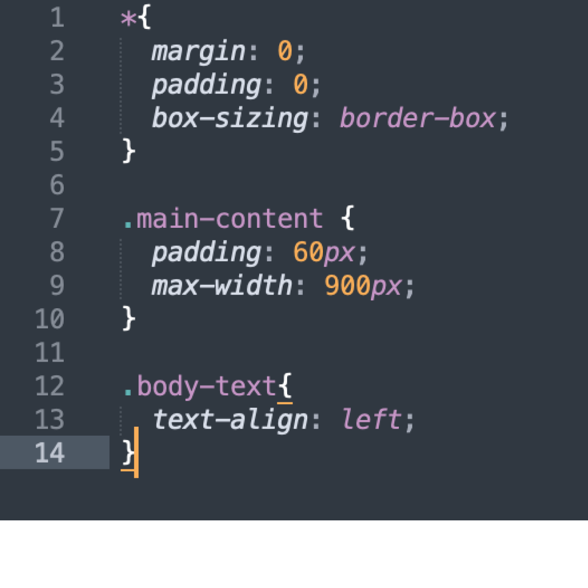

It's okay if a line or two is centered, but when a huge layer of text is centered, it makes things much harder to read. In the CSS, you use the text-align tag to have the text flushed left, right and center (but that's what it's already at in this example).
